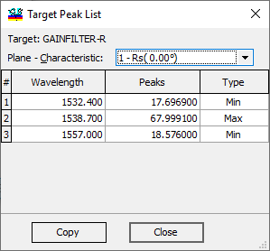

Target Peak List
Target Peak List
Navigation: OptiLayer Menu Commands > Data Menu > Target Editor >
Target Peak List
` <phasegdgdd_target_generator.html>`__ ` <target_editor.html>`__ ` <integral_target.html>`__
The “Target Peak List” displays all minima and maxima detected in the Target. This dialog can be accessed by right-clicking in the Target Editor. To study the peaks in the current Target, you can use the right-click command in the Evaluation windows.

The “Plane - Characteristic” combobox allows users to select a specific case of interest, particularly useful for multipage Target files with multiple characteristics. The list generated can be copied to the clipboard using the “Copy” command.